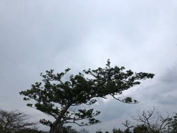
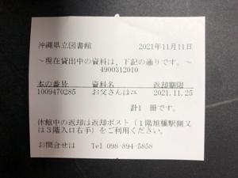

うるがいの話 ある日
最新: 貸出票【うるがいの話 ある日】とは 一日だけのプログです
『うるがいの話』の最新一日だけのプログで、通信料が少なく経済的だ。カニの画像をクリックすると全ての日付が載る『うるがいの話』サイトを表示します
|
|
【うるがいの話】 うるがい(ｳﾙｶﾞｲ urugai)とは、『もずくがに』の名前でとても大きくなります。 |
|---|---|
|
|
【カミマヤーの話】 猫のことを方言でマヤーといいます。カミマヤー（kamimayaa）とは、神の猫のことです。 |
|
【タナガーの話】 たながー（ﾀﾅｶﾞｰtanagaa）とは手長えびのことで、何種類かあり大きいのは車 エビぐらいになります。 |

|
【ぶながぁの話】 ぶながー(bunagaa)とは、赤い髪の毛、赤い身体、そして身長は１ｍ２０ｃｍ ぐらい、川の蟹を食べているの目撃された。場所は沖縄県国頭郡大宜味村のと ある村僕の隣近所に住んでいる爺さんから、聞いた話です。 |
|
|
【ギーマの話】 ギーマ(giima)とは、山原の里山に咲くスズランに似た、 花を付けます。実は食べられます、 気が付くと口の周りが紫になっています。 |
2022年01月19日 (水）貸出票
18:27

県立図書館から借りた本を読んでいると、前に借りれていた人の『貸出票』が
挟まれていた。おや、一冊かい。これは、ピンポイントで借りた一冊なのかな
と思いながらあっという間に完読する。ユーチューバ『ヒカリン』が本の中で
出てくる。知らないと世間知らずらしい、ホー、知らない、実在の人物？、読
んで行くうちに、ん、本のなかでは架空人物と分かる。ただ、ネットで調べる
と『ひかりんチャンネル』がある、ンー実物をモデルにしているか。私のチャ
ンネルに登録者が一人いる！。というわけで工工四のリクエストに応えるため
作戦中である。

『お父さんはユーチューバー』 あらすじ・内容
宮古島のゲストハウス「ゆいまーる」のひとり娘、小学5年生の海香は絵を描く
ことが大好きで、将来は東京の美術大学に入りたいと思っていた。そんなある
日、父親の勇吾が宣言した。「俺はユーチューバーになる！」 宮古島の自然
とゲストハウスに集う人々を通じて描く家族小説。
１８時１５分 ビットコインの総資産 ￥１３、７７６↓下がり過ぎ